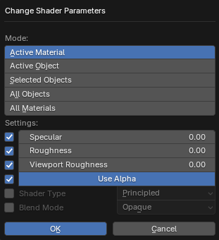

Change Shader Parameters

About
Changes the settings of materials. Makes it easier to change the settings of a large number of materials. For example, you can change at once all materials that are created after importing game levels. All parameters except Mode have a check mark on the left side, which is responsible for changing this parameter. If the check mark is on, the parameter will be changed, if it is off, the value of the material parameter will remain unchanged. The operator can change the Cycles/EEVEE parameters and the Internal Render parameters (Blender Render in Blender 2.7x). For Cycles/EEVEE the parameters Specular, Roughness, Viewport Roughness, Use Alpha, Shader Type, Blend Mode, Shadow Mode are used. For Internal Render the parameters Diffuse Intensity, Specular Intensity, Transparency Alpha, Specular Hardness, Transparency, Shadeless are used
Mode
Operator Mode. Specifies which materials to change
Active Material- Active material of the active objectActive Object- All materials of the active objectSelected Objects- All materials of selected objectsAll Objects- All materials of all objects of the blend-fileAll Materials- All materials of the blend file
Specular
Value for specular intensity (Specular parameter of the Principled BSDF shader node)
Roughness
Value for roughness (Roughness parameter of the Principled BSDF shader node)
Viewport Roughness
Roughness value in the viewport (Properties > Material > Viewport Display > Roughness parameter of the material)
Use Alpha
Value for alpha channel. If on, the Alpha socket of the Principled BSDF node will be connected to the Alpha socket of the Image Texture node. If off, this connection will be removed
Shader Type
Specifies the type of shader. It is possible to specify Principled BSDF, Diffuse BSDF, Emission
Blend Mode
Specifies the value for Properties > Material > Viewport Display > Blend Mode for the material
Shadow Mode
Specifies the value for the Properties > Material > Viewport Display > Shadow Mode option for the material. This option is only available in Blender 2.80 and later
Diffuse Intensity
Specifies the Properties > Material > Diffuse > Intensity parameter of the material
Specular Intensity
Specifies the Properties > Material > Specular > Intensity parameter of the material
Transparency Alpha
Specifies the Properties > Material > Transparency > Alpha parameter of the material
Specular Hardness
Specifies the Properties > Material > Specular > Hardness parameter of the material
Transparency
Specifies the Properties > Material > Transparency option for the material
Shadeless
Specifies the Properties > Material > Shading > Shadeless option for the material